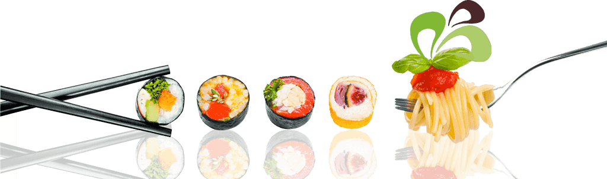

<div class="scrollable"><div class="ui fluid left icon action transparent input ricerca"><input type="search" placeholder="Cerca..." ng-model="query" id="cerca"/><i class="search icon"></i><div class="ui icon button"><i ng-click="annulla_cerca();" class="close icon"></i></div></div><div ng-show="titolo=='Food'" ng-if="ha_orario_food" class="orari-food"><table class="food"><tr><td><strong>Orari</strong></td><td ng-bind-html="orario_food" class="food-cell"> </td></tr></table></div><div class="ui divided list no-margin-top"><div ng-show="::(!negozi.length)" class="item"><div class="content"><div class="header">Nessun esercizio in questa categoria</div></div></div><div ng-repeat="negozio in negozi|filter:search| orderBy: 'nome' " ui-sref="negoziDetail({id:{{::negozio.id}}})" ng-click="" class="item"><div class="content"><div class="header">{{::negozio.nome}}</div><div ng-repeat="categoria in ::negozio.categorie" class="description">{{::categoria.nome}}</div></div><div class="compact ui icon button"><i class="chevron right icon"></i></div></div></div></div><div ng-show="titolo=='Food'" class="overlay-footer"></div>